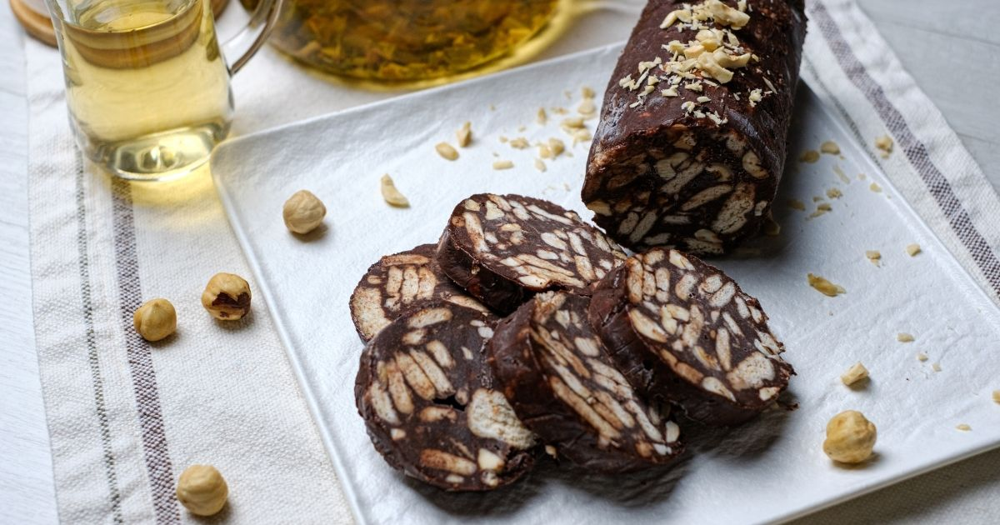

Bisküvi, tereyağı, toz şeker ve kakaonun bir araya gelip yaptığı en lezzetli pasta tariflerinden biri o. Bu üçgen mozaik pastanın yapımı o kadar kolay, pratik ve bir o kadar lezzetli ki..

Gerekli Malzemeler
100 gram tereyağ
1 su bardağı süt (200 ml)
3 yemek kaşığı kakao
4 yemek kaşığıpudra şekeri
2 paket petibör bisküvi
Mozaik Pasta Nasıl Yapılır?
Öncelikle petibör bisküvileri iri parçalar halinde bir kap içerisine kırın. Bu noktada bisküvilerin toz haline gelmediğinden emin olmanızı tavsiye ederiz. Aksi halde çok küçük parçalara bölünen bisküvilerin donması zaman alır ve mozaik pastanız istediğiniz gibi bir şekil alamaz.
Mozaik pasta harcını hazırlamak için ise ilk önce oda sıcaklığındaki tereyağını ocağa alıp eritin.
Eritilmiş tereyağını bir kap içerisinde toz şeker ve süt ile karıştırın. Ardından karışıma kakaoyu da ilave edip tüm malzemeleri çırpıcı ile karıştırın.
İyice özdeşleşen mozaik pasta harcına, ilk adımda iri parçalar halinde kırmış olduğunuz bisküvileri ekleyin ve bir spatula yardımıyla tüm malzemeleri nazik bir şekilde karıştırın.
Mozaik pasta harcı tamamen hazır olduktan sonra tüm malzemeyi, pastayı servis edeceğin kabın içine alın veya dikdörtgen şeklinde kestiğiniz bir streç film içine boşaltın.
Streç film sararak şekillendirdiğiniz ya da kalıba dökmüş olduğunuz mozaik pastayı dondurucuda birkaç saat bekletin ve soğuduktan sonra dilimleyerek servis edin.